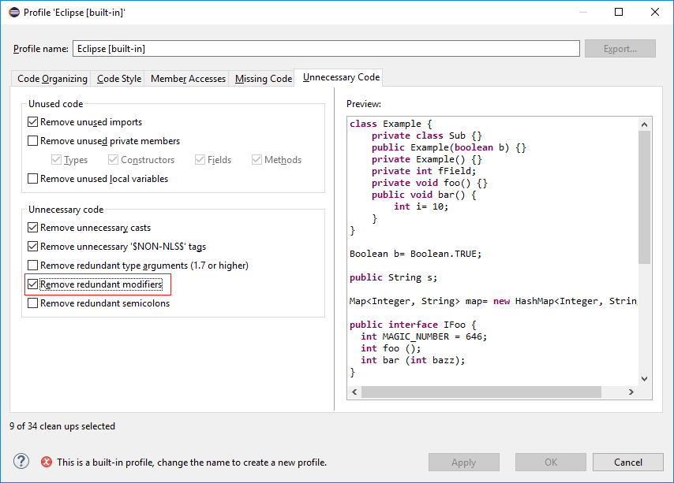
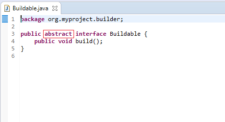
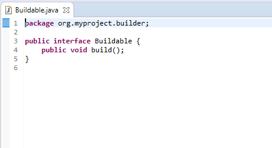

Java 13 Support
The release notably includes the following Java 13 features:
JEP 354: Switch Expressions (Preview).
JEP 355: Text Blocks (Preview).
Please note that these are preview language feature and hence enable preview option should be on. For an informal introduction of the support, please refer to Java 13 Examples wiki.
Java Views and Dialogs

Java Editor
for loops that are iterating through Collections. The
loop must reference the size method as part of the condition and if accessing elements in the body, must use the get
method. All other Collection methods other than isEmpty invalidate the quickfix being offered.


final field in the class constructor. The fix will initialize a String to the empty string, a numeric base type to 0, and for class fields it initializes them using their default constructor if available or null if no default constructor exists.


abstract modifier on the interfaces.

For the given code:
You get this:

The $(tags) directive will add @uses and @provides tags for all uses and provides module statements.

Code assist for "Chain Template Proposals" will be available. These will traverse reachable local variables, fields, and methods, to produce a chain whose return type is compatible with the expected type in a particular context.
The preference to enable the feature can be found in the Advanced sub-menu of the Content Assist menu group (Preferences > Java > Editor > Content Assist > Advanced) .

Java Formatter

Some of the existing subsections and settings are now phrased differently to better express their function:
- The Blank lines within class declarations subsection is now Blank lines within type declaration
- Before first declaration is now Before first member declaration
- Before declarations of the same kind is now Between member declarations of different kind
- Before member class declarations is now Between member type declarations
- Before field declarations is now Between field declarations
- Before method declarations is now Between method/constructor declarations
More importantly, a few new settings have been added to support more places where the number of empty lines can be controlled:
- After last member declaration in a type (to complement previously existing Before first member declaration setting)
- Between abstract method declarations in a type (these cases were previously handled by Between method/constructor declarations)
- At end of method/constructor body (to complement previously existing At beginning of method/constructor body setting)
- At beginning of code block and At end of code block
- Before statement with code block and After statement with code block
- Between statement groups in 'switch'
Most of the new settings have been put in a new subsection Blank lines within method/constructor declarations.

JUnit
Debug


Java Build
For the 4.13 release, it is possible to disable this new behavior with the VM property: -Dorg.eclipse.disableAutoBuildOnSettingsChange=true. It is planned to remove this VM property in a future release.